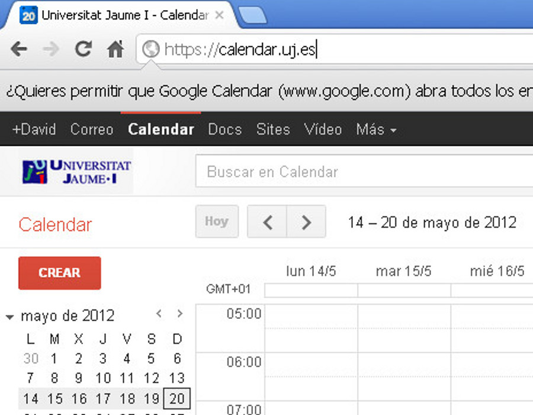
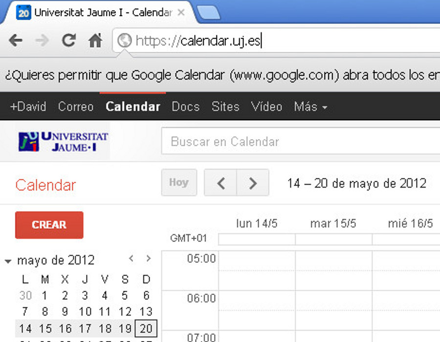

Trabajo colaborativo con Google Calendar
google
calendar
Organización efectiva de nuestras tareas
Apreta la tecla → para avanzar.

Google Calendar

Es la aplicación de calendario electrónico de Google, disponible desde el 2006 para los usuarios de GMail y desde el 2011 para los usuarios de la UJI. Características:
- Interfaz web.
- Almacenamiento en la nube.
- Compartición de calendarios.
- Sincronizado con dispositivos.
- Integrado con todas las aplicaciones de Google.
- Gestión de alertas con notificación vía SMS.
Razones para usar Calendar
- Comparte tu agenda. Permite que otras personas
de tu entorno puedan consultar, total o parcialmente, la agenda de
tus eventos.
- Accede a tu calendario donde quiera que vayas.
- No olvides más ningún evento. Los diferentes
métodos de recordatorio de Google Calendar nos alertarán de
cualquiera de nuestros eventos más importantes
- Invitaciones. Realiza invitaciones a eventos,
haciendo seguimiento de las confirmaciones.
- Sincroniza con dispositivos móviles.
Acceso a Google Calendar
Podemos acceder al calendario, vía web, mediante un
navegador, accediendo directamente a su dirección URL o a través de los
enlaces situados en sus aplicaciones relacionadas:
- http://calendar.uji.es
- Desde el correo electrónico podemos acceder pulsando el enlace
ubicado en la barra superior de aplicaciones.
- Desde la página del portal de la UJI, primero deberemos acceder al correo
electrónico.
 

Cambia de foto con las teclas: ↑ y ↓
El navegador

IMPORTANTE: El navegador que utilicemos repercutirá en la
experiencia de usuario que obtengamos de la aplicación. La web de hoy
en día evoluciona día a día, y utilizar un navegador antiguo nos
limita el uso de todas las nuevas funcionalidades que van añadiendo.
- Chrome. OK.
- Firefox. OK.
- Internet explorer 8 o inferior. No recomendado.
Apreta la tecla → para avanzar.
Vistas
Apreta la tecla → para avanzar.
Vistas de calendario
Representan la información del calendario en la
escala temporal que más nos interese. Por defecto se nos mostrará la
vista semanal. Veamos las más interesantes:
- Vista semanal. Información completa de eventos
sobre la semana en curso.
- Vista mensual Informacion completa sobre
eventos representada sobre una matriz de días de calendario del
mes en curso.
- Agenda. Representación de los próximos eventos
en orden, sin estructurar por días/semanas/meses.


Cambia de foto con las teclas: ↑ y ↓
Práctica
Apreta la tecla → para avanzar.
Práctica de vistas de calendario

- Accede a tu Google Calendar de la UJI.
Recuerda, puedes hacerlo a través del correo electrónico o
directamente desde la URL http://calendar.uji.es.
- Cambia entre las diferentes vistas de tu calendario
personal. Observa como cambia la división en columnas
del tiempo gesitonado
Semanal
Mensual
Agenda
Diaria
5 días
El evento
Apreta la tecla → para avanzar.
El evento

Es la unidad mínima de información de un calendario.
Representa un acontecimiento que se producirá un día, a una hora, con
una determinada duración, y con una posible repetición.
Hay mucha información adicional y muchas propiedades
que podemos asociar a un evento, así que empecemos con un ejemplo de
un evento sencillo:
Reunión con el comercial de ONO el lunes 11 a las
11.00h


Cambia de foto con las teclas: ↑ y ↓
Gestión visual de eventos
Muchas acciones sobre el calendario podemos
realizarlas manejando únicamente el ratón.
- Añadir un evento un día a una hora. Nos
situamos en la vista semanal, en la columna del día del evento, y
pulsamos en la franja horaria en la que se crearía el evento.
- Borrar un evento. Pinchamos sobre un evento
(sobre el fondo coloreado) y elegimos la opción
Borrar
- Desplazar evento. Utilizando la técnica de
drag&drop podemos desplazar un evento a otro
día/hora, o ampliar/reducir su duración.
Cambia de foto con las teclas: ↑ y ↓
Práctica
Apreta la tecla → para avanzar.
Práctica de eventos sencillos
- Crear un nuevo evento. Accede al calendario. Introduce un nuevo evento con la siguiente informacion:
Título: Partida de Paddle
Día: 14 de Junio
Hora: De 16h a 18h.
Lugar: Servei d'Esports, Universitat Jaume I.
Recordatorio: Por SMS, 2 horas antes.
- Desplazar evento: El evento ha pasado a ser el 13 de Junio, de 15h a 16.30h.
- Borrar evento: El evento no lo realizaremos finalmente, lo borramos.
Calendarios
Apreta la tecla → para avanzar.
Los calendarios

Podemos separar nuestros eventos en diferentes
calendarios. A parte de tener clasificada la información, nos permiten
dar diferentes niveles de privilegios a cada calendario. Vemos algunos
ejemplos:
- Calendario personal. Donde introducimos
nuestros eventos personales, no compartido, o sólo compartido con la familia.
- Calendario de trabajo. Con todos los eventos
de faena, incluidas vacaciones. Compartido con todos los compañeros
de trabajo sólo en modo ocupado/disponible.


Cambia de foto con las teclas: ↑ y ↓
Crear un nuevo calendario
Podemos añadir calendarios propios fácilmente, de manera que podremos clasificar perfectamente todas nuestras citas de manera agrupada. Ventajas:
- Nos organizamos mejor.
- Definimos el nivel de compartición específico para cada calendario.
- Definimos la alerta por defecto de cada tipo de calendario.
Apreta la tecla → para avanzar.
Práctica
Apreta la tecla → para avanzar.
Práctica de calendarios

- Crear un nuevo calendario llamado "Fiestas".
- Añade el evento de "Sant Pere" el 29 de Junio al calendario "Fiestas", duración todo el día.
- Entra a la configuración del nuevo calendario y comprueba el tipo de alerta con el que se nos notificarán los eventos de ese calendario.
- Cambia o añade alguna alerta. ¿Qué tipo de alerta tendrá el evento que hemos añadido anteriormente?